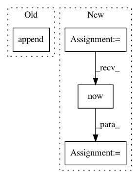

93fc87ef4a966d6667a5f9dc6826555e994988c8,web/dataIndicatorsHandler.py,GetDataIndicatorsHandler,get,#GetDataIndicatorsHandler#,16
Before Change
comp1 = components(p)
comp2 = components(p)
comp_list.append(comp1)
comp_list.append(comp2)
self.render("stock_indicators.html", comp_list=comp_list, leftMenu=webBase.GetLeftMenu(self.request.uri))
After Change
comp_list = []
try:
date_now = datetime.datetime.now()
date_end = date_now.strftime("%Y-%m-%d")
date_start = (date_now + datetime.timedelta(days=-300)).strftime("%Y-%m-%d")
print(code, date_start, date_end)
// open, high, close, low, volume, price_change, p_change, ma5, ma10, ma20, v_ma5, v_ma10, v_ma20, turnover
// 使用缓存方法。加快计算速度。
stock = common.get_hist_data_cache(code, date_start, date_end)
logging.info(stock.head(1))
// print(stock) [186 rows x 14 columns]
// 初始化统计类
// stockStat = stockstats.StockDataFrame.retype(pd.read_csv("002032.csv"))
stockStat = stockstats.StockDataFrame.retype(stock)
batch_add(comp_list, stockStat)
except Exception as e:
In pattern: SUPERPATTERN
Frequency: 3
Non-data size: 4
Instances
Project Name: pythonstock/stock
Commit Name: 93fc87ef4a966d6667a5f9dc6826555e994988c8
Time: 2017-12-07
Author: yhy
File Name: web/dataIndicatorsHandler.py
Class Name: GetDataIndicatorsHandler
Method Name: get
Project Name: allenai/allennlp
Commit Name: 0459261c388bec72937e0268c4316b85279d0bac
Time: 2018-09-24
Author: kl2806@columbia.edu
File Name: allennlp/semparse/contexts/atis_tables.py
Class Name:
Method Name: get_approximate_times
Project Name: OpenMined/Grid
Commit Name: 0bce5765b02513a167e454f112a61bd70d47d6ff
Time: 2020-03-02
Author: ionesiojr@gmail.com
File Name: gateway/app/main/processes/controller.py
Class Name: FLController
Method Name: create_cycle